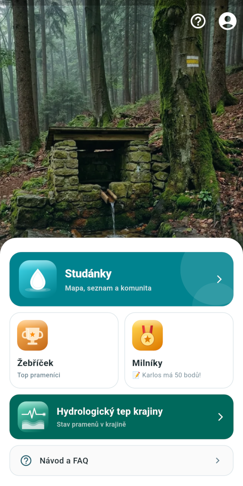
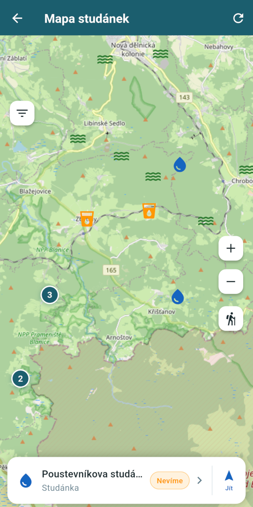
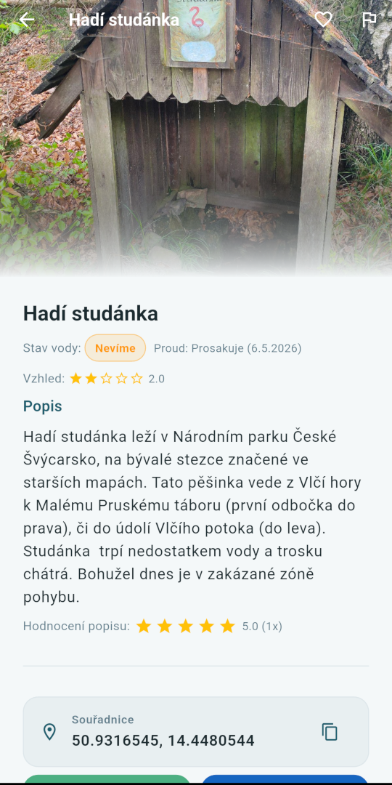
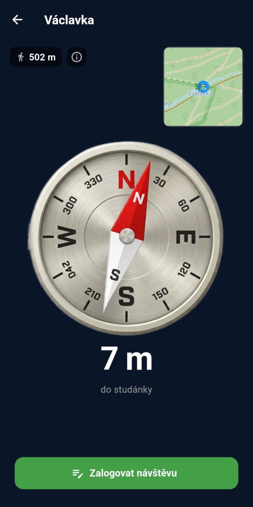
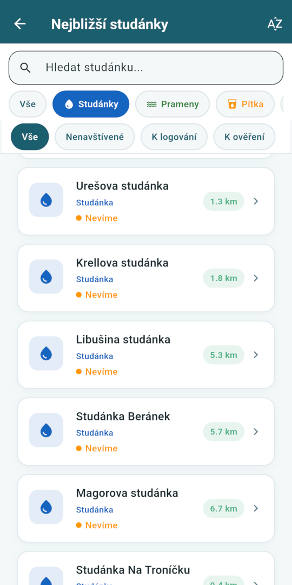

Strážci pramenů
Mapa studánek, pramenů a pítek v Česku a na Slovensku.
Komunitně. Detailně. Pro každého kdo chodí do přírody.
🚀 Připravujeme aplikaci
Mapa studánek, pramenů a pítek v Česku a na Slovensku.
Komunitně. Detailně. Pro každého kdo chodí do přírody.
Tisíce studánek, pítek a studen v ČR a na Slovensku — připravené v databázi.
Sleduj kolik vody teče a jak se to v čase mění. Tep krajiny v reálném čase.
Přidávej fotky, hodnoť kvalitu vody a sdílej zkušenosti s komunitou.
Sbírej body za logování návštěv a získej titul Strážce pramenu, Topografa nebo Dokumentaristy.
Každá nová studánka je ověřena dalšími návštěvníky — žádné podvody, jen důvěryhodná data.
V lese bez signálu? Studánku zaloguješ i tak — data se odešlou až po návratu k síti.
Takhle to vypadá uvnitř — mapa, navigace ke studánce, detail pramenu s historií a hodnocením.





Aplikace je téměř hotová, ale před vydáním v Google Play potřebuje ověřit, že vše funguje na různých zařízeních. Pomoz mi otestovat aplikaci a získej k ní přístup jako jeden z prvních.
Přihlásit se jako alfa tester →Vyplníš krátký formulář se svým Google e-mailem a já tě zařadím do testovacího programu. Po vydání pak budeš mít aplikaci dřív než ostatní.
📩 Máš dotaz? Napiš na info@strazcipramenu.cz